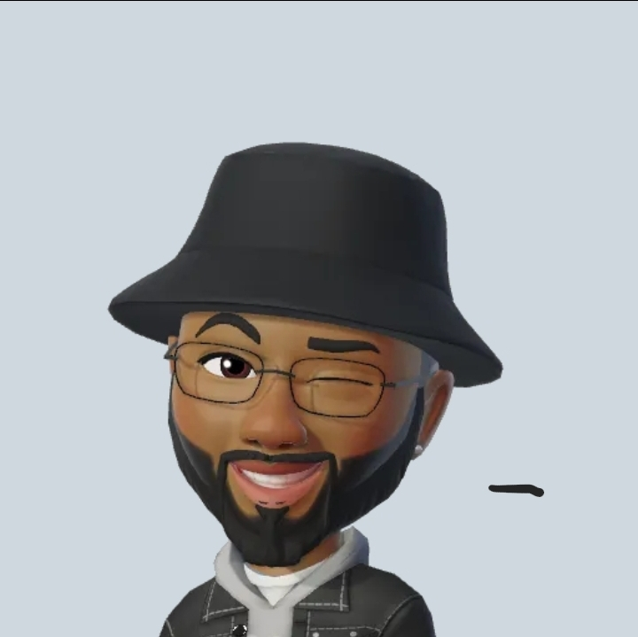

Web Developer
Summary
Passionate web developer seeking to transform caffeine into clean, efficient code. Aspiring to debug the universe and design websites so intuitive, even a cat could navigate them. Looking to join a dynamic team where I can unleash my creativity and my obsession with pixel-perfect design.
Education
Obafemi Awolowo University, Osun State, Nigeria
- BSc. Political Science (2025)
Nigeria Institute of Journalism (NIJ), Lagos State, Nigeria
- Higher National Diploma (2019)
Deluxe Pacesetter College, Ogun State, Nigeria
- Secondary School Leaving Certificate (2017)
Work Experience
Web Developer, AwesomeTech Solutions
June 2018 – Present
- Engineered cutting-edge websites that load faster than you can say “JavaScript.”
- Collaborated with designers to create interfaces so user-friendly, even your grandma could use them.
- Debugged code with the precision of a seasoned detective in a tech noir thriller.
- Implemented responsive designs, ensuring websites looked stunning on everything from widescreen monitors to smartwatches.
- Mastered the art of balancing multiple projects while maintaining a keen sense of humor.
Junior Web Developer, Code Wizards Inc.
January 2016 – May 2018
- Developed dynamic web applications that made clients exclaim, "Wow, it actually works!"
- Assisted in the migration of websites from outdated technologies to modern frameworks, like a digital archaeologist.
- Participated in daily stand-up meetings, where I perfected the art of the 30-second update.
- Worked closely with senior developers to learn the mystical ways of the code ninja.
- Regularly tested websites for bugs, ensuring they were squashed promptly and with minimal drama.
Skills
- HTML/CSS: Crafting web pages with the precision of a digital artist, ensuring every pixel is in its rightful place.
- JavaScript: Making websites come alive with interactive features and dynamic content, like a modern-day sorcerer.
- React: Building single-page applications with the efficiency and flair of a front-end superhero.
- Node.js: Server-side scripting that keeps the backend humming smoothly, just like a well-oiled machine.
- Git/GitHub: Version control expertise that prevents code conflicts and preserves sanity.
- Responsive Design: Creating web experiences that look amazing on screens of all sizes, from jumbo monitors to pocket-sized phones.
- Debugging: Hunting down and fixing bugs with the determination of a detective on a high-stakes case.
- Team Collaboration: Thriving in collaborative environments, whether working with designers, fellow developers, or the occasional office plant.
- Creativity: Bringing a unique blend of artistic flair and technical know-how to every project, ensuring each one stands out.
- Problem-Solving: Tackling complex challenges head-on and coming up with innovative solutions, often accompanied by a celebratory dance.
Awards & Achievements
Best Web Developer Award, AwesomeTech Solutions (2022)
Recognized for exceptional contributions to the development of high-impact websites and applications, increasing user engagement by 40%.
Employee of the Month, Code Wizards Inc. (2017)
Celebrated for consistently delivering outstanding work and maintaining a positive, collaborative spirit within the team.
Certifications
Certified JavaScript Developer
Issued by JavaScript Institute (2020)
Completed an extensive course on advanced JavaScript techniques and best practices.
React Professional Certification
Issued by React Academy (2021)
Demonstrated proficiency in building complex, scalable web applications using the React framework.
Front-End Web Developer Nanodegree
Issued by Udacity
December 2019
Mastered front-end web development skills through hands-on projects and mentorship.
Other Achievements:
- Hackathon Winner, Tech Innovators 2020
Led a team to victory by developing an innovative web app that addresses social issues, earning top honors out of 50+ competing teams.
- Open Source Contributor
Regularly contribute to several open-source projects, helping improve tools and libraries used by developers worldwide.
- Guest Speaker, Web Dev Conference 2021
Delivered an engaging talk on modern web development trends and the future of front-end technologies, receiving positive feedback from attendees.